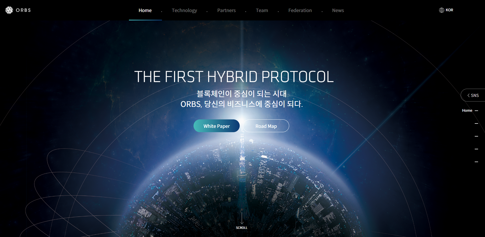

ORBS
ORBS
PC Site, HTML, CSS, JavaScript

작업1. animate를 이용한 동적 효과
작업2. 맞춤 슬라이드 제작
1.animate를 이용한 동적 효과
if else 조건문으로 5개의 section 구간을 구분 짓습니다. 스크롤 시 조건에 맞는 구간에 도착 하면 오른쪽 네비게이션은 현재 위치의 메뉴가 active 됩니다. 또한 if else 조건에 맞으면 .animate({'margin-left' : '0' , opacity : '1'}) 식으로 만들어, animate 내 margin으로 좌,우,위,아래 움직이는 효과를 낼 수 있었습니다.
2.맞춤 슬라이드 제작
HTML : div > ul > li 구조를 만듭니다.
JS : n 변수 선언 사용처는 좌 클릭 시 n 변수는 -1 감소 되고 우 클릭 시 n 변수는 +1 증가 합니다.
우 클릭 시 if(n보다 2가 크면) n은 +1 증가하고
n*liwidth = pos; 값만큼 animate{left : pos}, 1000); 이동 합니다.
선택 된 아이템이 중간으로 와서 펼쳐지는 모션을 만들려면
필요한 건 아이템을 감싸고 있는 ul의 width/2,아이템의 width/2, 선택한 아이템의 left값을 빼면 아이템이 중간에 맞춰집니다.